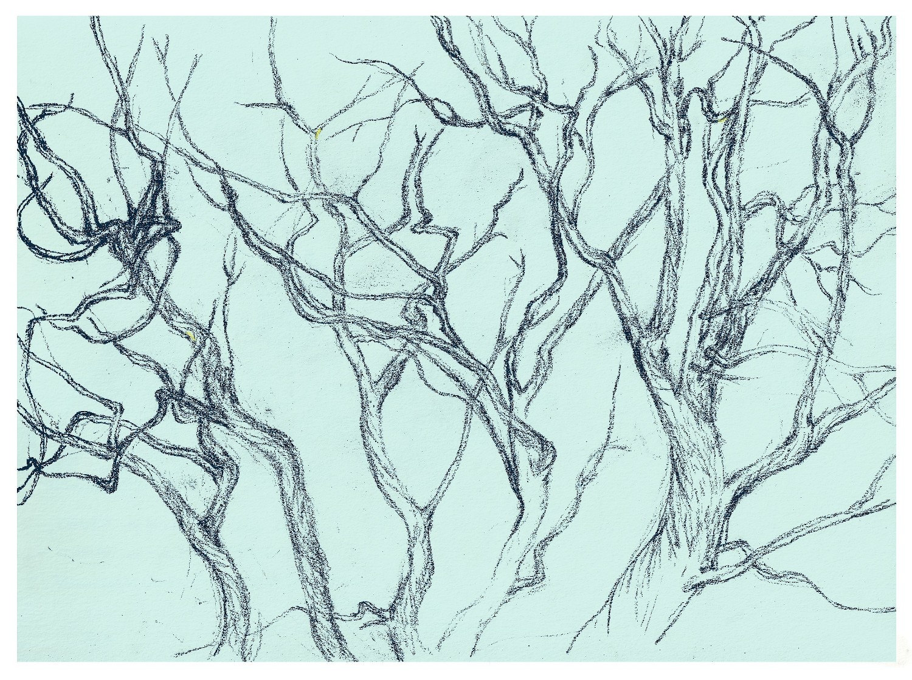

原文稿 |Transcript
Ep.09 片思 | 会绝望的面包
开场 | Opening
其实，我们说出的每一句话都可能是错的，表达或者内容，现在或者将来；但这并不妨碍我们每天都在说话，也不妨碍我们朝向真实的探索与表达；意识到这一点，至少我们可以不失谨慎也不为完美主义所束缚。
In fact, every sentence we speak may be wrong—whether in its expression or its content, whether now or in the future. But this does not stop us from speaking every day, nor does it prevent us from moving toward truth in our exploration and expression. Once we recognize this, at least we can remain cautious without being trapped by perfectionism.
1
不知为什么，自从我上次说过永不再塌缩的黑面馒头之后，它就又开始塌缩了；原本如同辉长岩1鹅卵石一样光滑的表面，现在凹凸不平如同陨坑遍布的月球。
果然，从来都没有“永不”这回事；除了“永不”本身。
永不塌缩，就好像是克尔凯廓尔（Søren Kierkegaard
1813-1855）那里的永不绝望；永不绝望的结果，是陷于绝望，而永不塌缩的后续，当然是开始塌缩。
So… ever since I said my “never collapsing again” black steamed buns,
it started collapsing. It used to be smooth like a gabbro pebble. Now
the surface looks like the moon—craters everywhere.
Indeed, there is no such thing as “never”. Except “never” itself.
A bread that never collapses is kind of like Kierkegaard's idea of
“never despairing.” If you insist on never despairing, you actually
fall into despair. And if you insist a bread will never collapse…
yeah, it collapses.
2
在《致命的疾病》3这本书里克尔凯廓尔探讨的“绝望”，很容易被误解为，既然绝望会致死，那么我们一定要避免绝望。
在我开始读这本书之前，从一些二手文章里也形成了这样的理解。但其实克氏在第一部分一开篇里有着更复杂的精彩论述：当你“避免绝望”的时候，你其实也在避免“绝望的可能性”。你把自己从无限可能里抽离出来。所以反而更接近一种现实的、无意识的绝望。
这听起来有些绕。
或许可以这样说：绝望不是要避免的东西，而是个体能够成为真正的自我的前提条件。
在 to be able to despair（能够绝望） 和 to be in
despair（陷在绝望里）之间有一个关键区别。能够绝望，代表着一个人精神结构的成熟性，说明你意识到自己有自由，有可能性，有责任，有一个自我的存在。而一个完全不能绝望的人，是他还没能意识到那个精神上的自我。
如果一个人沉溺于日常，终日周旋于社会角色，而不做任何精神上的追问，他可能活得很顺，但实际上却从未面对过真正的自己，因此他其实在无意识中陷入了绝望之地。
人是精神。The human being is spirit.
In The Sickness Unto Death, the “despair” Kierkegaard analyzes
is easily misunderstood. People think: if despair leads to (spiritual)
death, then we must avoid it completely. Before I read the book, I
also got this impression from secondhand summaries.
But in fact, in the very beginning of Part One, Kierkegaard's argument
is far more complex and brilliant: when you “avoid despair,” you are
actually avoiding the _possibility_ of despair. You pull yourself away
from infinite possibility. And ironically, you fall into a more
realistic yet unconscious form of despair.
It sounds a bit twisty.
Perhaps we can put it this way: despair is not something to be
avoided; it is a precondition for becoming a true self.
There is a crucial distinction between
to be able to despair and to be in despair. Being able
to despair means your inner structure is mature; it means you are
aware of freedom, possibility, responsibility, and the existence of a
self. A person who can't despair at all, has not yet awakened to that
spiritual self.
If someone drifts in the everyday world, floating between social roles
without ever engaging in spiritual inquiry, they may live comfortably,
but they have never encountered their true self. And that, is a kind
of unconscious despair.
The human being is spirit.
3
当一个社会系统中引入某种乌托邦理想并全面实践时，最可能会产生这一类绝望的人群，因为这理想的完美和永无绝望，也因为当它被植入社会系统时，将精神思考化作日常口号。与剥除个体的可能性相反，这完美理想本身，却可能是抽象的无限可能性，一旦进入“现实化”（actuality），将会遭遇极大的落差。理想的无绝望，反而导致实践中的深度绝望。
可能性越无限，其在现实化时的下降越巨大。
When a utopian ideal is installed in a social system and enforced
thoroughly, this type of despair becomes common among the crowds.
Because the ideal promises perfection and the absence of despair; and
because once it is embedded into a social structure, spiritual
reflection reduced to daily slogans.
Paradoxically, when people lose their real possibilities, this perfect
ideal turns into an abstract infinity. When that infinity encounters
actuality, the gap becomes enormous.
What was meant to eliminate despair ends up producing despair at its
deepest level.
As infinite as is possibility's merit, just so great is the descent.
4
在个体层面也一样。否定可能性，与置身无限的可能性，其实是绝望的两端，它会湮灭人类个体的生存与生长。
人必然是一个活在尺度中的生物。
It's the same for individuals.
To deny possibility, or to drown in unlimited possibility—both are
forms of despair. Both flatten human growth.
It is a necessity that we, as human beings, live within a certain
scale, a certain proportion (something echoing Aristotle's golden
mean).
5
嗯，我感觉好像要把自己说晕了。
我们还是来聊聊永不再塌缩的黑面馒头。在连续塌缩两次之后，我用冰箱里没喝掉的牛奶，以1:1的水面比，烤了一个可能会塌缩但却没有塌缩的懒人免揉欧包。
我想我大概是尝试在东方水与西方火之间搭建某种平衡。而这也只是那些宏大尺度中的一条细线；在有限与无限之间，在暂时与永恒之间，在自由与必然之间。
Hmm... I think I'm starting to confuse myself.
Let's return to the never collapsing black steamed buns. After two
consecutive collapses, I used the leftover milk in my fridge, with a
1:1 water-to-flour ratio, to bake a easy no-knead bread that, might
collapse but did not.
Maybe I was trying to build a balance between Eastern water and
Western fire. And this is just one thin line among those grand
scales—between the infinite and the finite, the temporal and the
eternal, freedom and necessity.
尾声 | Ending
“在现代与传统之间，在宏大与渺小之间，在抽象与情感节奏之间的谨慎平衡”，也正是2025年普利兹克（Pritzker）建筑奖颁奖词里对刘家琨的介绍。
最近一期的圆桌派2太精彩了，其中就有从多个角度对尺度平衡的讨论。
我想，在每一个生成（Deleuze）的时刻，我们不都是在做出自己的平衡吗。
承受着塌缩的可能性，向着不塌缩的现实奔跑。
今天就先聊到这里。
Tak og ha det! （丹麦语/北欧语混搭 再见）
“...walks a careful line between modernism and tradition, between
monumentality and humility, between abstraction and emotional
rhythms.”—that was how the 2025 Pritzker Prize jury described Liu
Jiakun.
The latest episode of Round Table was brilliant, and part of it
was precisely a discussion about scale and balance from multiple
perspectives.
I think that in every moment of becoming (Deleuze), we are all making
our own balance.
Bearing the possibility of collapse, toward a reality that does not
collapse, we move.
That's it for today.
Tak og ha det! (A playful Danish–Scandinavian mix for “goodbye”)
脚注 | Footnotes
1 辉长岩: 一种深成的基性岩浆岩，主要由辉石和斜长石组成，质地粗粒，多呈深色，常形成于地壳深部的缓慢冷却环境
2 圆桌派第8季Ep.10: “有何不可”
3 延伸阅读：《致死的疾病》第一部分 A